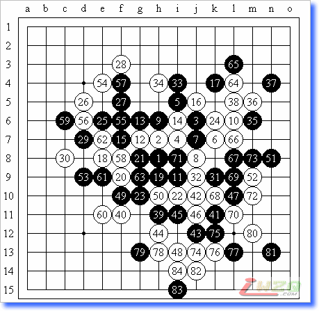

星月杯【铃】距离
#1 星月杯【铃】距离 作者：有志青年 发表时间：2007-7-25 14:09:54
疏星开局，对局双方是黑棋星月王族手术，白棋是新派连珠真水无香。
黑五被认为是白棋较好的打点，这个白10、12的走法也是我喜欢的，19形成一子通三路，看起来黑棋优势明显。白棋后面的防守很不错，24后，黑棋被分割开来，25、27强攻，28——妙防！
至此黑棋不得不转入防守，左边的黑棋已无胜势而右边白棋形成很厚的一片，黑棋无奈只好慢慢侵削。黑棋之后似乎做的不错，因为到43的时候，白棋确实被消掉不少，44当然的防守。由于多了40、44两个白子，在左下又形成气候了，黑棋以45、47、49三手把白棋左下防净。50、51交换两手，感觉局面缓了一点，但白棋已悄然抢到先手了。
54时，或许是因为黑棋比较担心自己被对手造成长连，所以就先交换了。59绝对，60做V，使白棋向外拓展。64后，白棋一系列的狂打……黑棋无奈，由于黑棋21、63、23这条线上的冲和跳冲都不成立（冲即速败），所以也只好任由白棋欺凌，无可奈何啊！
白棋后面的追胜下的很漂亮……为黑方——星月王族手术——惋惜~~~~~只好赞叹白棋表现太好……
